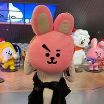

HI, I'M MARY



I'm a writer and a coder. Out of the two, I've been a writer for longer. Though I've always had a passion for writing, I recently realized my passion for coding and tech and want to push myself further into the space.
Currently, I'm a narrative script writer for the cyber-security podcast, Security Sandbox, but I want to do something more coding-related,
When I'm not writing or coding, I'm either working out, gaming, volunteering with my college's Rotaract Club, planning events with my college's Women in Computing social committee, playing music, or just having a good time.